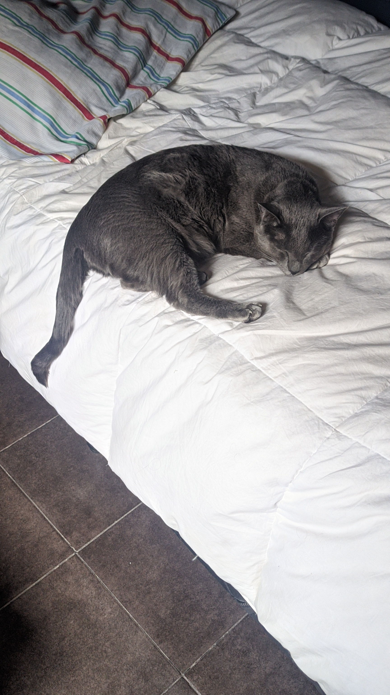

Tomas Verdun

Summary and Objectives:
My name is Tomás and i'm from Salta, Argentina. My personal goal is to be a good self taught web developer
Education:
- Secondary Complete
- Studying Computer Science Degree (2nd year)
- Michigan proficiency
Work experience:
Skills:
- Willing to learn
- Can speak two languages (English, Spanish)
- Patience, Tolerant
Hobbies
Contact